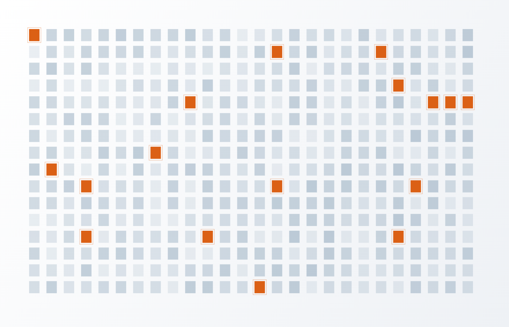
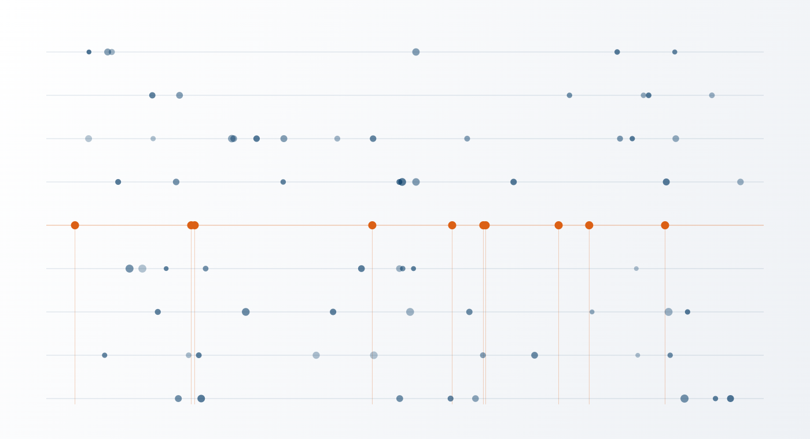
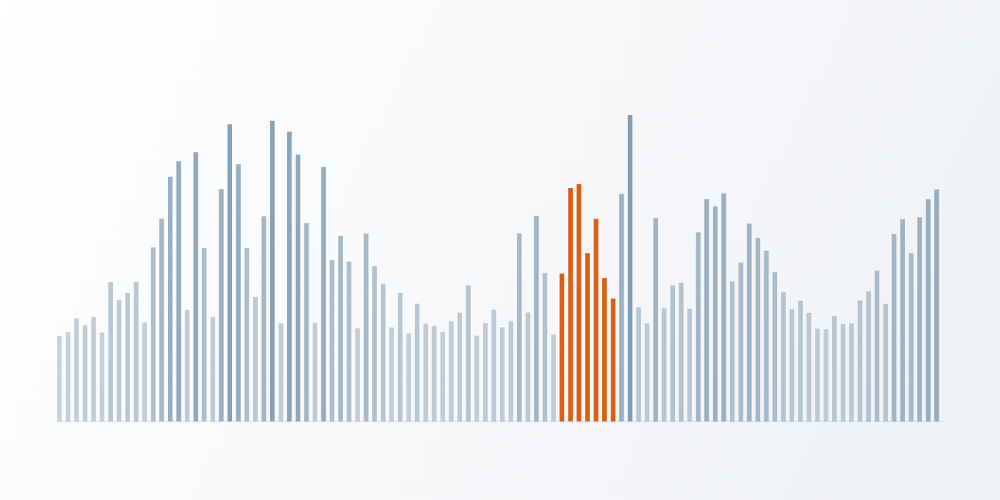
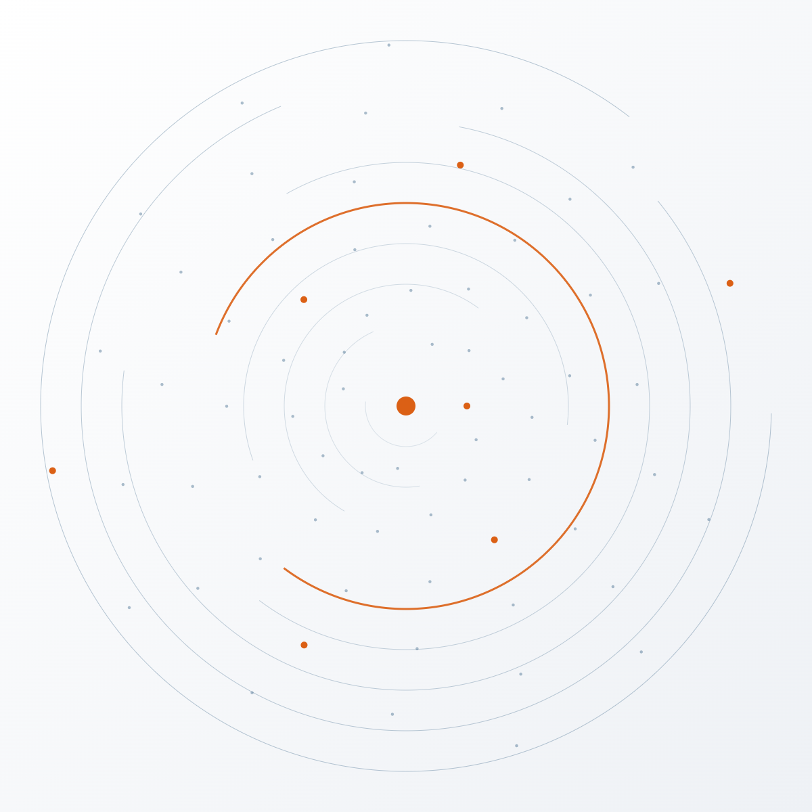
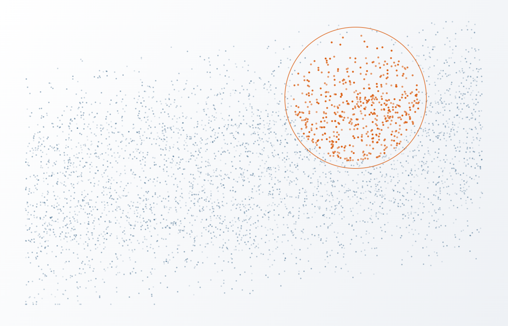

{{ home.hero.headline }}
{{ home.hero.body }}
{{ home.reassembly.footnote }}
{{ home.storyBrand.eyebrow }}
{{ home.storyBrand.headline }}
{{ home.storyBrand.body }}
{{ card.text }}
{{ home.plan.eyebrow }}
{{ home.plan.headline }}
{{ step.text }}

{{ home.howWeHelp.headline }}
{{ home.howWeHelp.body }}
{{ home.howWeHelp.foundationText }}

{{ home.statementBand.headline }}
{{ home.statementBand.body }}

{{ home.canYou.headline }}
{{ home.canYou.body }}

{{ home.beyond.headline }}
{{ home.beyond.body1 }}
{{ home.beyond.body2 }}
Bring the question. We will tell you what the evidence can carry.
Nine disciplines, one evidentiary foundation, and an expert attached to every opinion. Most engagements use two or three of these at once, which is the point of having them under one roof.
Start with your question
Clients rarely call asking for a service line. They call with a question they cannot answer. These are the ones we hear most.
Disciplines
Every one of these has a named expert behind it who will sit for the deposition. Open any discipline to see the questions it answers.
What happened on this device, when, and by whom? Was data deleted, moved, or altered? Does the artifact record support the account being given?
Forensically sound methods that are repeatable and defensible. Preserve first, analyse second, document throughout. Findings are stated in terms of what the artifacts support, and where the record is silent.
Defensible collections, artifact-level analysis, reconstructed timelines, and an expert prepared to explain all of it under examination.
Does the claimed pattern hold at population scale? What do the transactional records actually establish about conduct, hours, pricing, or class composition?
Identification, acquisition, analysis, and production of enterprise systems including SQL Server, Oracle, and DB2. We read the system before we read the data, then use visualisations and statistical models to make the volume comprehensible.
Population-level analysis rather than sample anecdote, visual exhibits a jury can follow, and testimony on method as well as result.
How do we access, locate, collect, and preserve this at volume without losing the context that makes it meaningful?
Identification through production, including Relativity processing, hosting, and review support. Because our own experts work on what these teams collect, the foundation has to be sound, so we own it rather than renting it.
A reviewable record, documented decisions on scope and method, and a witness who can explain why the search was reasonable.
What is the economic effect? What would have happened absent the conduct? How sensitive is the number to each assumption behind it?
Build the counterfactual explicitly. Where the damages rest on transactional data, the same firm that analysed the data supports the model, so the two do not contradict each other on cross.
Damages and valuation analysis, sensitivity testing, rebuttal of opposing financial opinions, and testimony.
What happened, who was involved, and how much of it can be established rather than inferred?
Our Special Investigations Unit responds to criminal acts, government investigations, employee misconduct, and urgent internal matters. Investigative instinct paired with the evidentiary discipline that keeps findings usable later.
Findings, a documented investigative record, and privilege-aware reporting built to survive later scrutiny.
How did they get in, what did they reach, what can we demonstrate about it, and what is our notification exposure?
Expert-driven risk mitigation and incident response, tailored rather than templated. Because the same people testify, the response is documented as though it will be examined, because it often is.
Incident findings, security posture assessment, remediation priorities, and expert support if it becomes a dispute.
Where does the personal data live, and how do we respond to a DSAR within the window without over-disclosing?
Map the data, then design a review and production workflow that controls cost. The hard part is rarely locating the data; it is reviewing and turning it over efficiently.
A defensible response workflow, cross-border handling that respects GDPR and equivalents, and a repeatable process for the next request.
What data do we hold, why, and what would we be able to show about how our systems were run?
Data maps, retention policy, and Data Footprint reduction, plus audit and compliance readiness across the US and EU. Designed by people who have seen which gaps get exploited in litigation.
A governance strategy that lowers cost and risk at once, and controls you can actually evidence.
Who will stand behind this opinion when it is challenged, and will the method survive the challenge?
Expert opinions, fact witness, PMK, 30(b)(6), and data neutral engagements. Our case portfolio includes both defence and plaintiff matters, and our CEO has served as special master on multiple occasions.
A report written to be attacked, and an expert who will defend it on paper, in deposition, and at trial.
We built our own methods because the off-the-shelf ones did not answer the question.
Chambers and Partners has recognised the firm nine consecutive years, and specifically for structured data and the tools built around it.
Use action data early to establish facts before the expensive phase of discovery, and resolve sooner on better information.
Structured and unstructured analytics run together, so the transaction record and the document record are read against each other rather than separately.
Our approach to the non-traditional sources: IoT, telematics, building systems, and the devices people forget are keeping records.
A review methodology built for defensibility of the coding decision itself, not just throughput.
Where this shows up
Matter types where these disciplines regularly run together. Since 2008 the firm has worked more than 3,000 matters, from a single mobile device to cases involving hundreds of thousands of plaintiffs and billions of records.
You do not have to know which discipline you need.
That is our job. Tell us what you are trying to establish and we will tell you which of these it takes, or that it does not take us at all.
Start building your narrative
You are not hiring one expert. You are getting the bench behind them.
Filter by discipline to see who would sit on your matter, or open a profile to read how they work.
Then you may belong on this page. We are built by experts, for experts, with the infrastructure that lets you spend your time being one.
Join our teamPhone, email, LinkedIn, and CV to be populated from the vetted profile.
Reach them through iDS →{{ selName }}
{{ selBlurb }}
{{ para.text }}
“{{ selQuote }}”
Featured publications
Signature talks
Nothing on this page describes a client, a matter, or a case outcome.
Leadership here has done the work, not just managed it.
Not every matter needs the full bench. But when complexity escalates, a team that already works together is a meaningful advantage over assembling separate vendors mid-matter.
The matters clients thought were unanswerable.
Each of these began as a question someone else had already declined to answer.
Can you disprove commonality when the class is built on billions of records?
Counsel faced a certification theory that assumed uniform behavior across an enormous transactional population. Sampling had not settled the question either way.
We worked from the system that produced the records before touching the records themselves, then tested whether the claimed pattern survived at population scale.
Counsel went into the certification fight knowing precisely which parts of the theory the data supported and which it did not.
Can you authenticate evidence everyone else assumed was valid?
A central document had gone unchallenged through months of briefing. Both sides had built argument on top of it.
We examined provenance rather than content: how the file came to exist, what the surrounding artifacts recorded, and whether the two accounts were consistent.
The record supported a different reading than the assumed one, and the strategy adjusted before the assumption became testimony.
Can you build a timeline when email is not the evidence?
The relevant conduct lived in mobile devices, cloud services, and application logs across several custodians. The mail file said almost nothing.
Correlate across sources rather than search within one. Each artifact was placed on a common clock, with gaps identified as gaps.
A sequence the parties had been arguing about in the abstract became a documented chronology one expert could explain and defend.
Can you find decades-old policies inside millions of archived documents?
Coverage turned on documents created long before the systems that now stored them, in formats no one had indexed for this purpose.
Treat retrieval as an evidentiary exercise: understand how the archive was built, then design a search whose completeness could be explained.
Counsel could say what was found, what was searched, and why the search was reasonable. That is the part that matters when it is challenged.
A narrower range of bad outcomes. A clear account of what the record supports and what it does not. Conclusions that survived the other side's expert. That is what Truth Through Data means in practice.
Tech Enabled, Not Tech Dependent.
AI is worth embracing. It is not a substitute for judgment. And the real risk is not that a model gets it wrong. It is that the model gets it wrong confidently, and no one catches it.
Where the line sits
AI can unlock centuries of human knowledge written in free-flowing prose. It can run many technical processes at once. It expands our reach and accelerates our progress. What it cannot do is hold the opinion, because an opinion has to be owned by someone who can be cross-examined on it.
Where we stand
We build tools that scale institutional expertise: grounded in our own knowledge, transparent about their limits, designed to help our team orient faster.
The expert owns the conclusion. That is not a philosophical position; it is what makes an opinion defensible when it is challenged.
Confident output makes flaws harder to see. Reviewing AI-assisted work requires a different kind of attention than reviewing a spreadsheet.
Probabilistic, non-repeatable output breaks a defensibility model built on repeatability. Solvable through methodology, and not a reason to avoid the technology.
AI as a subject of expertise
Disputes increasingly involve AI-generated or AI-influenced evidence: models trained on data that may have been improperly collected, outputs introduced without adequate validation, conduct mediated by systems no witness fully understands.
Those artifacts deserve the same rigor as any other. Evaluate, challenge, explain.
What we do not do
When we deploy AI, it meets the same standards of defensibility, transparency, and rigor as everything else we sign our name to.
Library
Our writing on AI and evidence, in one place. A running library rather than a position statement.

When a decision-maker leans on a model, the questions counsel has to ask change shape.

What happens when the system itself, rather than the person operating it, becomes the subject of the dispute.

Forensic data validation when the artifact may have been generated rather than recorded.

Disclosure, hallucination, and what an expert can actually stand behind.
Be Curious, Not Judgmental.
What our experts are working through, written for the people who have to use it.

{{ postCount }}
Occasional, and only when there is something worth reading.
SubscribeA firm built by experts, for experts.
Truth Through Data begins with the people who interpret it. Here, expertise compounds, because the infrastructure exists to let you be an expert.
What is different here
Our professionals work inside a collaborative bench model with real institutional support: structured development, a 90-day launch program for new experts, and meaningfully less administrative drag than most firms.
Curiosity is valued. Judgment matters. And when our experts stand in front of their work, they do it with a team behind them.
A structured first quarter, not a desk and a login.
A dedicated coach supporting new revenue producers.
Engagement paperwork, conflicts, and systems: handled.
Built by experts, not by investors. Decisions follow the work.
Independently owned, which means the work decides.
No investor timetable pushing an opinion toward a preferred answer. The experts here own the firm, so the standard for what we will say is set by the people who have to defend it.
The iDS Way
We Are iDS. We Grow iDS. Be Curious, Not Judgmental.
Open roles
Placeholder listings, to be replaced with live postings.
Bring us the question you have not been able to answer.
Tell us what you are trying to accomplish. We will tell you whether the evidence can get you there, and what it would take.
Quick to respond, slow to answer: we will acknowledge now and come back with substance once we understand the matter.
Attaching the complaint lets us start the conflicts check straight away, which is usually what stands between a first call and being able to work.
PDF or Word. Sent over an encrypted connection and used only to run conflicts.
Every inquiry is read by someone who can tell you whether we are the right firm for it, including when we are not.
United States and United Kingdom, with collection capability across Europe, Asia, and Latin America.
Preservation questions do not wait. Say so in the first line and we will treat it that way.
Without a foundation of evidence, a legal team can only argue the law.
A talented team without the raw material is reasoning from assumption. The theory gets built, the position hardens, and the fact that would have changed it surfaces at the eleventh hour. Get your team standing on the actual record early and you are building on a foundation instead of a house of cards.
Our engagement process is built to move at the pace of a live matter, so starting is rarely the thing that slows you down.
Tell us what you are trying to establish. We will tell you whether the evidence can get you there, and how quickly we can be working on it.
Contact iDSRead how we approached matters that started as unanswerable questions. No client details, no case statistics.
See the Can You…? questions →Truth Through Data
Where expertise leads, defensible outcomes follow.
iDiscovery Solutions | Website Mockup (20260818) | info@idsinc.com